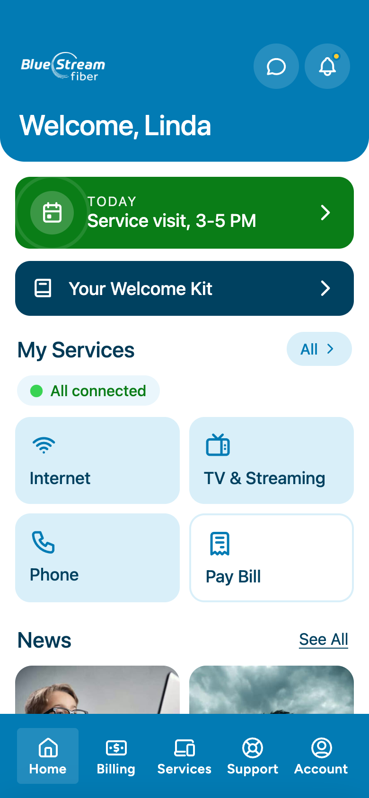
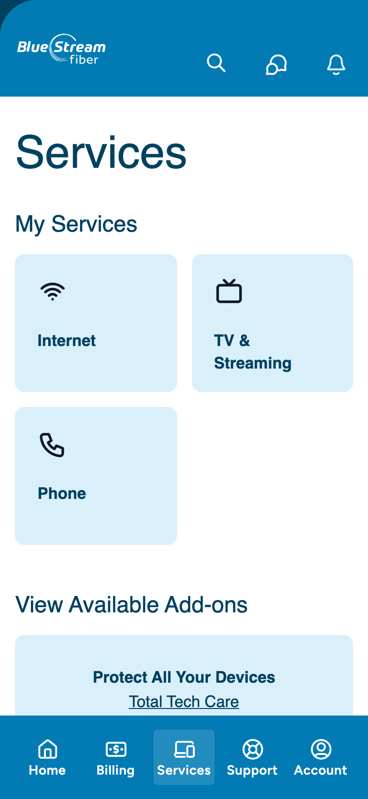
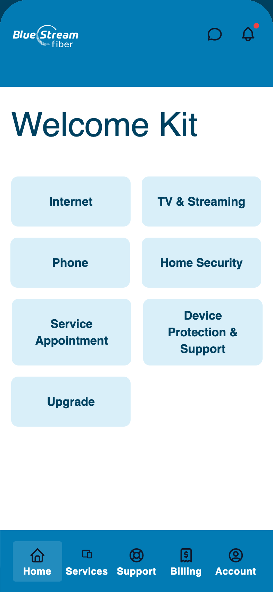
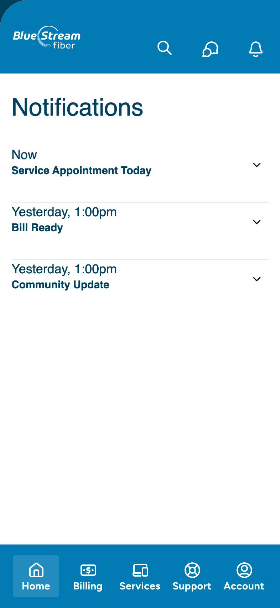
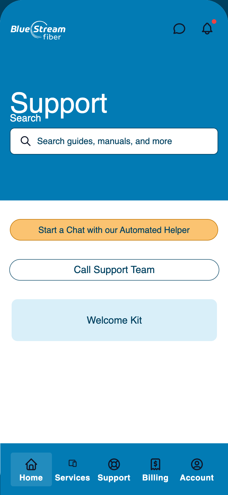
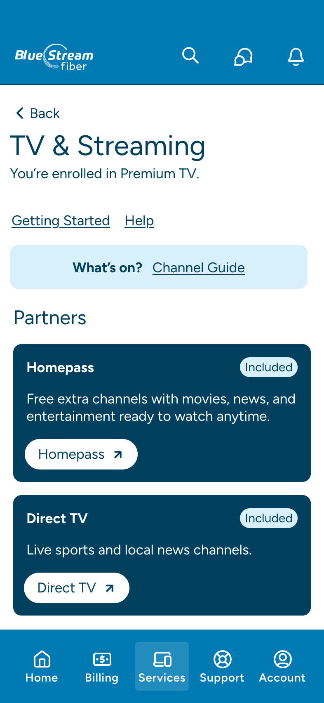
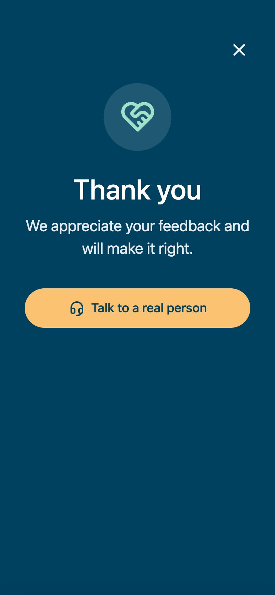

Blue Stream Fiber · customer app
Redesigning a support app so subscribers in their sixties and seventies could answer their own questions, instead of calling for them.
Victoria Reed · Lead Product Designer · 2025–2026
Every dispatched technician cost about six hundred dollars. Every confusing billing question went to a call center built for explaining, not for heading calls off. The app was supposed to take on that load. It wasn't.
The brief said "reduce call volume." The people on the other end of those calls said something more useful: they trusted the phone, and they trusted a person.
So we tested with them. Five users between sixty and a hundred years old in round one. Six HOA residents, fifty-five and up, in round two. We tested with bifocals on, and with a finger that wasn't sure where to start.
The brief
Reduce call volume.
What people needed
Give people fewer reasons to call.
Our users didn't want fewer calls. They wanted the answer. If the app gives it first, the calls drop on their own.
Support had been treated as a place you go. Our users were living it as the only light in the room. So the app had to light the way before anyone went looking.
Sign-in is where the first support call used to start. So we took out every step that makes people give up.


ServicesWhat you have, and what you can add

Welcome KitA setup guide for every service

NotificationsBill ready and outage news, before you ask

SupportSearch it, chat about it, or call a person
Most of the calls we shadowed weren't about broken internet. They were about the bill. The HOA paid the base cost, the resident paid for add-ons, and nobody had told the resident which was which.

"Is the technician still coming?" is a phone call. So the visit answers it first. The appointment moves from getting ready, to on route, to arrived, live, with the technician's name and a one-tap call.
4 or 5 starsA thank-you, and you're done

3 stars or lessStraight to a real person
Rate the visit right in the app, while it's fresh. Happy customers get a high five. Anyone who isn't gets a way to talk to a real person, while it still matters.
It was the most argued-over call on the project. Testing said build it, with two conditions. We shipped both as hard rules.
The cost: we pushed a bigger help-center overhaul down the list to make room for it.
Outcomes
Ease of use, from a panel of HOA residents fifty-five and up. One of them looked for Billing under Account, so we moved Billing up the menu.
Likely to use the AI helper, from people who called themselves tech beginners.
The scores were a signal, not the point. This was step one toward an app that is the support relationship, not the overflow channel for it.
Have a product your customers call about instead of use? Let's talk.
Try the clickable prototype